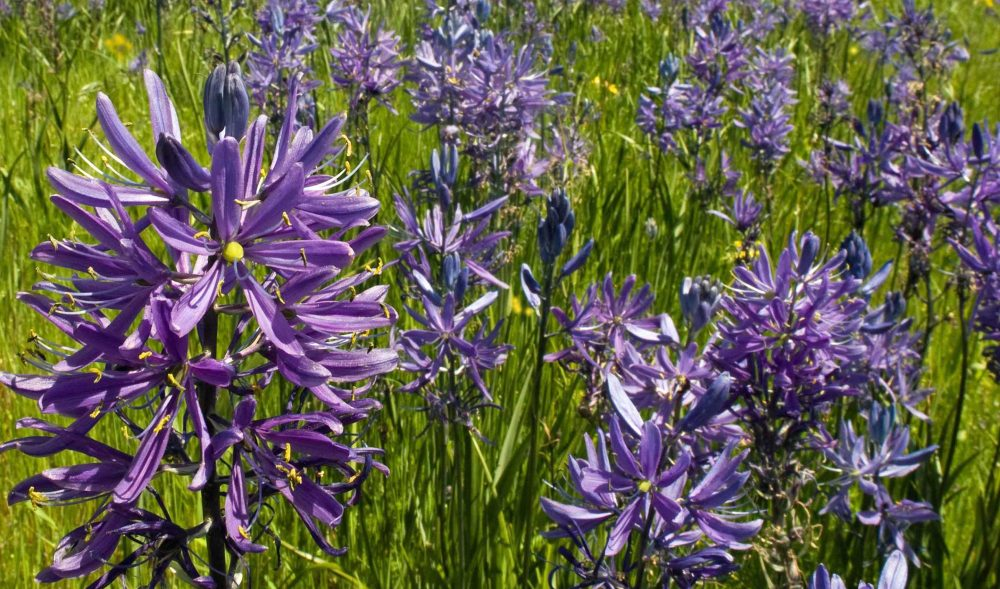
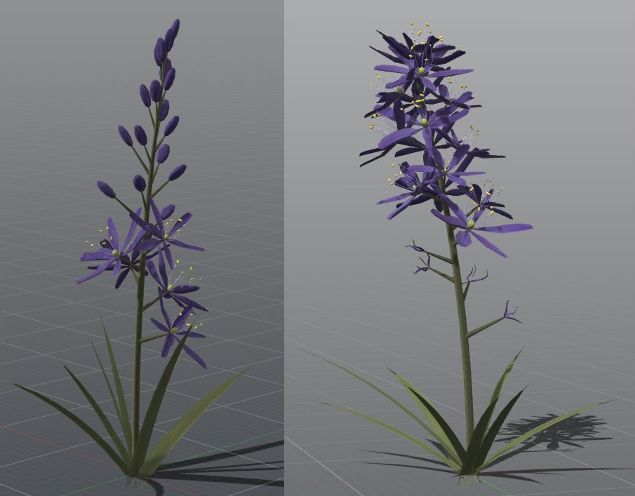
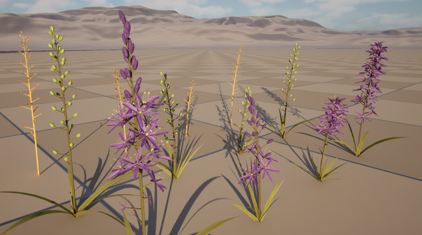

Malahat VRLP Plants (2025)
My team's job on the Malahat Virtual Reality Landscape Project was to develop processes for generating infinite variations of plants which each change naturally with the seasons. These plants would be used in the planned VR application which will allow users to learn about plants native to Malahat Territory by exploring detailed environments based on real sites.
During my four months on the project, I created several of the plants with PlantFactory (Garry Oak, Wild Cherry, Yarrow, Salmonberry, and Camas), wrote an automatic export script, and contributed to documentation for our client so that the VRLP team could use the techniques we developed to create more plants.
Designing Camas
Each plant came with its own challenges that necessitated unique solutions to make them appear as representative of their real-life counterparts as possible. Here I'll focus on common camas, a plant with cultural significance as a historical staple food for many indigenous peoples in the Pacific Northwest.

PlantFactory allows artists to create seasonal changes for their plants through use of the 'Season' value; a number from 0 to 1 which is specified when generating a mesh and can be used within calculations in the node graph to affect how the plant appears. In Spring, camas flowers begin blooming at the bottom of the stalk, and as the season progresses, buds farther up the stalk begin to bloom while the ones farther down wither. I used the Season value to control the blooming progress, but I found that using this value on its own didn't allow me to represent the natural variance seen in reality. This is because camas plants bloom at different rates depending on their growing conditions, so on any given day, camas plants can be seen with flowers at various heights (see image above).
To capture this variance, I used a pseudorandom number generated from each plant's unique seed (a number used to generate a particular instance of a plant). I added this pseudorandom number to the Season value and used that sum to determine the blooming progress of each plant instead of the raw Season value. This meant that even when generating multiple meshes with the same Season value, they can vary in the height of their blooms (see image below).

By also using this sum to affect nearly every other feature of the plant (stalk length, materials, etc.), the result was a system that could generate any number of unique camas plants that develop smoothly throughout the seasons. The image below shows camas meshes generated by the same four seeds in spring, summer, and fall. Our client (VRLP) was very happy with the final product; in a meeting, they called out these camas models as particularly impressive and true-to-life.

Automation
Exporting plant meshes from PlantFactory was a lengthy and error-prone process. For each plant, we had to set up folders to separate the meshes by season, type in a chosen seed, set the Season value, specify the location and filename including the species name, seed, and season according to our naming convention, then repeat this process for every seasonal variant of every desired seed.
Annoyed by that process, I looked through the PlantFactory documentation to see if this could be automated. Soon after, I had written a Python script that completed all of those steps instantly, only requiring the user to specify the species name, seeds, and root directory once. I shared this script with the team and they used it for the rest of the project. Since we had to export 16 meshes per species, and would repeat this several times as we iterated the designs, the script was a substantial time-save and prevented us from making mistakes in file naming or export settings.
Documentation
As we neared the end of our time on the project, we worked together on documentation for our client so they could use the processes we developed as they continued development.
I contributed detailed write-ups about the techniques used in each of the plants I designed, instruction on how to use the auto-export script (described in the previous section), some general instruction on using PlantFactory, as well as the overall design of the document. This document had to be quite detailed, since many of the people at VRLP who would continue the project did not come from technical backgrounds.
When the client received the documentation, they told us that what we produced met their needs and was exactly what they were looking for.